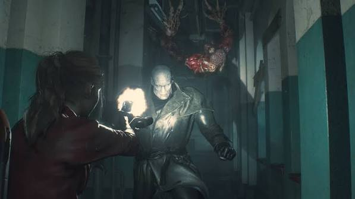

Inimigos

| Inimigo | Descrição |
|---|---|
| Zumbis | Infectados pelo T-Virus. Resistem a vários tiros e podem se levantar de novo. |
| Lickers | Criaturas rápidas e cegas que caçam pelo som. Aparecem em corredores e no teto. |
| Mr. X (Tyrant T-103) | Perseguidor quase imortal que segue o jogador pelo RPD. |
| G (William Birkin) | Cientista mutante que ataca em várias formas durante o jogo. |
| Cães zumbis | Rápidos e agressivos, aparecem em áreas externas. |
| Jacaré gigante | Chefe enfrentado nos esgotos. |